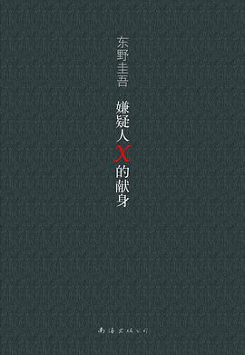
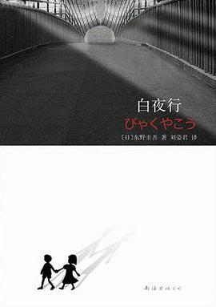
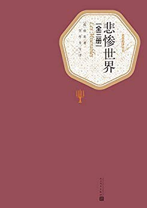
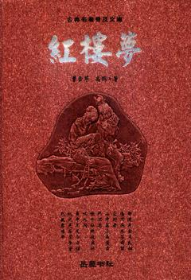

BOOK SHARE
| 书名 | 封面 | 读后感 |
|
《解忧杂货店》 |
该书讲述了在僻静街道旁的一家杂货店，只要写下烦恼投进店前门卷帘门的投信口，第二天就会在店后的牛奶箱里得到回答：因男友身患绝症，年轻女孩月兔在爱情与梦想间徘徊；松冈克郎为了音乐梦想离家漂泊，却在现实中寸步难行；少年浩介面临家庭巨变，挣扎在亲情与未来的迷茫中……他们将困惑写成信投进杂货店，奇妙的事情随即不断发生。 |
|
|
《嫌疑人x的献身》 |
 |
数学天才与物理天才，这两大高手之间的过招胜负并无悬念，而过程的精彩自然不言而喻。有意思的是，电视剧里最常见的噱头——神秘现象并未在电影版里出现。，在丝丝入扣的推理中加入了纯洁的爱情元素，并获得了成功。所以汤川学所要面对的不是物理之谜，而是爱情这个亘古无解的谜题。 |
|
《白夜行》 |
 |
故事围绕着一对有着不同寻常情愫的小学生展开。1973年，大阪的一栋废弃建筑内发现了一具男尸，此后19年，嫌疑人之女雪穗与被害者之子桐原亮司走上截然不同的人生道路，一个跻身上流社会，一个却在底层游走，而他们身边的人，却接二连三地离奇死去，警察经过19年的艰苦追踪，终于使真相大白。 |
|
《活着》 |

|
农村人福贵悲惨的人生遭遇。福贵本是个阔少爷，可他嗜赌如命，终于赌光了家业，一贫如洗。他的父亲被他活活气死，母亲则在穷困中患了重病，福贵前去求药，却在途中被国民党抓去当壮丁。经过几番波折回到家里，才知道母亲早已去世，妻子家珍含辛茹苦地养大两个儿女。此后更加悲惨的命运一次又一次降临到福贵身上，他的妻子、儿女和孙子相继死去，最后只剩福贵和一头老牛相依为命，但老人依旧活着，仿佛比往日更加洒脱与坚强。 |
|
《悲惨世界》 |
 |
故事的主线围绕主人公土伦苦刑犯冉·阿让(Jean Valjean)的个人经历，融进了法国的历史、革命、战争、道德哲学、法律、正义、宗教信仰。 |
|
《红楼梦》 |
 |
《红楼梦》是一部百科全书式的长篇小说。以宝黛爱情悲剧为主线，以四大家族的荣辱兴衰为背景，描绘出18世纪中国封建社会的方方面面，以及封建专制下新兴资本主义民主思想的萌动。结构宏大、情节委婉、细节精致，人物形象栩栩如生，声口毕现，堪称中国古代小说中的经 典。 |
|
PERCEPTION |
常言道：“书中自有颜如玉，书中自有黄金屋。”“读书破万卷，下笔如有神。”我们读过的书和我们走过的路都会变成我们身体的一部分而伴随我们一生。在这十几年的象牙塔般的求学生涯中，我也积累了很多的名言名句：
|